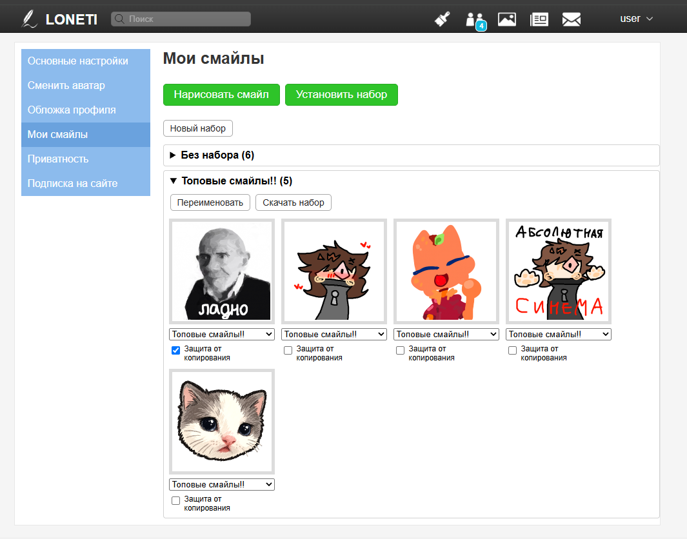
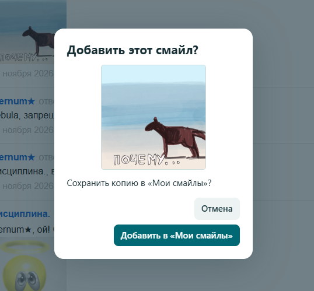

Loneti essentials
The LONETI drawing editor gets gradients and a magic wand that selects areas by color. You can also collect your favorite Smiles in packs to share with friends.
Version 2.4.1 · Android 8.0 and newer
В редакторе LONETI появляются градиенты и волшебная палочка для выделения по цвету. А любимые смайлы можно собирать в наборы и делиться ими с друзьями.
Версия 2.4.1 · Android 8.0 и новее


Install the Android app Установка приложения на Android
- Open Loneti-essentials.apk on your Android device.
- If Android asks to allow installs from the app that opened the APK, follow the system prompt and return to tap Install.
- Open Loneti essentials and sign in to LONETI. To change the app language, choose Язык / Language in the account menu or Settings. Before sign-in, the link is in the home page footer.
Already using an older version? Open the new APK to update in place. From version 2.3.0, the app shows a small notice when an update is available. Tap Download or dismiss it with ×.
Use a current version of Android System WebView. Android installation help.
- Откройте Loneti-essentials.apk на устройстве Android.
- Если Android запросит разрешение на установку из приложения, в котором вы открыли APK, следуйте системной подсказке. Затем вернитесь и нажмите «Установить».
- Откройте Loneti essentials и войдите в LONETI. Язык приложения можно поменять в меню профиля или в настройках через пункт «Язык / Language». До входа в аккаунт ссылка находится внизу главной страницы.
Если приложение уже установлено, откройте новый APK, чтобы обновить его. Начиная с версии 2.3.0, в приложении появляется небольшое уведомление о новой версии. Обновление можно скачать или скрыть уведомление крестиком.
Используйте актуальную версию Android System WebView. Справка по установке на Android.
Use the browser userscript Установка скрипта в браузере
-
Prepare your browser
Install TampermonkeyThe button opens the extension store in a new tab. Follow the steps for your browser.
Google Chrome
- In the store, click Add to Chrome, then Add extension.
- Open a new tab. Type
chrome://extensionsin the address bar and press Enter. You’ll see Chrome’s list of extensions. - Find the Tampermonkey card. Click Details and turn on Allow User Scripts.
- Come back to this guide and continue with step 2.
Microsoft Edge
- In the store, click Get and confirm Add extension.
- Open a new tab. Type
edge://extensionsin the address bar and press Enter. You’ll see Edge’s list of extensions. - On the Tampermonkey card, click Details. Turn on Allow User Scripts if it appears. If it’s missing, go back to
edge://extensionsand turn on Developer mode. - Come back to this guide and continue with step 2.
Mozilla Firefox
In the store, click Add to Firefox, then Add. Come back to this guide and continue with step 2.
-
Add the userscript
Install the userscript (3.3.0)Open the link above and confirm the installation or update in Tampermonkey. Reload any open LONETI tabs.
Enable early loading for the drawing tools
Open the Tampermonkey menu in your browser toolbar, choose Dashboard, then Settings. Under Content Script API, choose UserScripts API Dynamic. If that option is hidden, switch the configuration mode to Advanced. Save and reload the drawing tab. This lets the tools start alongside LONETI’s editor. Tampermonkey’s guide.
I see code instead of an Install button
Check that Tampermonkey is enabled in your browser and that you finished step 1. Close the code tab and open the userscript link again. Manual installation instructions.
-
Try your first Smile
Open LONETISign in to LONETI. If it was already open, reload the tab. Open a drawing and click a Smile in its comments. When you see the preview, setup is complete. Click Add to my Smiles to keep it or Cancel to close.
-
Подготовьте браузер
Установить TampermonkeyКнопка откроет магазин расширений в новой вкладке. Дальше следуйте инструкции для своего браузера.
Google Chrome
- В магазине нажмите «Установить», затем «Установить расширение».
- Откройте новую вкладку. Введите
chrome://extensionsв адресную строку и нажмите Enter. Откроется список расширений самого Chrome. - Найдите карточку Tampermonkey. Нажмите «Сведения» и включите «Разрешить пользовательские скрипты».
- Вернитесь на эту страницу и откройте ссылку установки скрипта в шаге 2.
Microsoft Edge
- В магазине нажмите кнопку установки и подтвердите добавление расширения.
- Откройте новую вкладку. Введите
edge://extensionsв адресную строку и нажмите Enter. Откроется список расширений самого Edge. - На карточке Tampermonkey откройте сведения о расширении. Включите «Разрешить пользовательские скрипты». Если такого переключателя нет, вернитесь на
edge://extensionsи включите «Режим разработчика». - Вернитесь на эту страницу и переходите к шагу 2.
Mozilla Firefox
В магазине нажмите «Добавить в Firefox», затем «Добавить». Вернитесь на эту страницу и сразу переходите к шагу 2.
-
Добавьте скрипт
Установить скрипт (3.3.0)Откройте ссылку выше и подтвердите установку или обновление в Tampermonkey. Обновите открытые вкладки LONETI.
Включить ранний запуск инструментов рисования
Нажмите значок Tampermonkey на панели браузера, выберите «Панель управления» и откройте вкладку «Настройки». В пункте Content Script API выберите UserScripts API Dynamic. Если этого пункта не видно, переключите режим настроек на расширенный. Сохраните изменения и обновите вкладку с рисунком. Справка Tampermonkey.
Вместо кнопки «Установить» вижу код
Проверьте, что Tampermonkey включён в браузере и вы выполнили шаг 1. Закройте вкладку с кодом и ещё раз откройте ссылку установки скрипта. Как установить скрипт вручную.
-
Попробуйте сохранить смайл
Открыть LONETIВойдите в LONETI. Если сайт уже открыт, обновите вкладку. Откройте рисунок и нажмите на смайл в комментариях. Появилось окно предпросмотра? Значит, всё работает. Нажмите Добавить в «Мои смайлы» или закройте окно кнопкой «Отмена».
Drawing tools
In the LONETI tool palette, look for Polygon and Magic wand beside the lasso and Gradient beside the paint bucket. Hover over an icon for a hint. On a phone, tap the brush icon at the bottom to open the palette and adjust the tool. You’ll find the same tools in drawings, rooms, and the Smile and avatar editors.

- Curve
- Choose Round ink for a uniform line or Hand ink for a gently varying width. Set the width and color, tap to place points, then choose Finish.
- Pressure
- Drag a curve point right or up to make the stroke thicker there. Drag left or down to taper it to a fine tip.
- Edit
- Drag points to reshape a curve. The action menu also lets you move, duplicate, split or join strokes. Control points stay available during the current editing session. LONETI saves the finished lines as pixels.
- Polygon
- Tap to place vertices, including in the space outside the drawing. Tap the first point or Finish to select the enclosed pixels inside the canvas.
- Magic wand
- Select similar colors with adjustable tolerance. Turn off Contiguous to select matching areas across the layer.
- Gradient
- Choose a linear or radial gradient. Tap the color strip to add a stop, then drag it along the strip or use the Position slider. Choose the stop’s color and save the preset to reuse it. Drag across the drawing to apply the gradient. An active selection limits the fill.
In rooms, other artists see the gradient in their regular LONETI editor. If the edit is too large to send, your layer stays as it was.
Инструменты рисования
На панели инструментов LONETI многоугольник и волшебная палочка находятся рядом с лассо, а градиент — рядом с заливкой. Наведите курсор на значок, чтобы увидеть подсказку. На телефоне нажмите значок кисти внизу экрана, чтобы открыть панель и настроить инструмент. Эти инструменты есть в обычном редакторе, комнатах рисования и редакторах смайлов и аватаров.
- Кривая
- Выберите круглую тушь для ровной линии или рукописную для штриха переменной ширины. Задайте толщину и цвет, расставьте точки и нажмите «Готово».
- Нажим
- Потяните точку кривой вправо или вверх, чтобы утолщить линию в этом месте. Движение влево или вниз сужает штрих до тонкого кончика.
- Правка
- Перетаскивайте точки, чтобы изменить форму кривой. В меню действий можно перемещать, копировать, разделять и соединять штрихи. Точки доступны, пока открыт редактор. LONETI сохраняет готовые линии в виде пикселей.
- Многоугольник
- Касайтесь рабочей области, чтобы поставить вершины. Точки можно размещать и за пределами холста. Нажмите на первую точку или «Готово», чтобы выделить часть фигуры внутри холста.
- Волшебная палочка
- Выделяйте похожие цвета с настраиваемым допуском. Отключите выделение только соседних пикселей, чтобы захватить совпадающие области по всему слою.
- Градиент
- Выберите линейный или радиальный градиент. Коснитесь цветной полосы, чтобы добавить точку. Перетащите её вдоль полосы или передвиньте ползунок «Положение». Выберите цвет точки и сохраните пресет, чтобы использовать его снова. Проведите линию по рисунку, чтобы применить градиент. Если есть выделение, градиент останется внутри него.
В комнате градиент виден другим художникам в обычном редакторе LONETI. Если изменение слишком велико для отправки, слой сохранит прежний вид.
Collect a Smile
Tap the Smile itself in a direct message, a Wall post or reply, a drawing comment, or a room chat to open its preview. With a mouse, hover to see its outline and click it. With a keyboard, use Tab to focus the Smile and Enter to open it.


Choose Add to my Smiles to save it to your account. Use Cancel or press Esc to close the preview. Collection requires the original 300 × 300 PNG so the script can check its copying preference. The userscript follows LONETI’s language.
Сохранение смайлов
Нажмите на сам смайл в личном сообщении, в записи или комментарии на стене, в комментарии к рисунку или в чате комнаты. Откроется предпросмотр. На компьютере наведите указатель на смайл и щёлкните по нему. С клавиатуры выберите смайл клавишей Tab и нажмите Enter.
Нажмите Добавить в «Мои смайлы», чтобы сохранить смайл в свой аккаунт. Чтобы закрыть предпросмотр, нажмите «Отмена» или клавишу Esc. Для сохранения нужен исходный PNG размером 300 × 300, чтобы скрипт мог проверить защиту от копирования. Язык скрипта совпадает с языком LONETI.
Organize your library
To hide your own avatar and nickname on this device, open Settings → Loneti essentials and check Hide my avatar and nickname on this device. You’ll see “You” in supported account and author labels. Other people see your usual profile.
On My emotes, choose New pack and name it. Smiles begin in Unsorted. Use the menu below each Smile to move it to a pack, and choose Rename to edit a pack name.
Expand pack headings in your library or in the Smile picker for comments and rooms. Inside a pack, the newest library entries appear first. Click a Smile in the picker to use it as usual.
LONETI stores the Smiles in your account. Your app or browser remembers which pack each Smile belongs to. To bring a named pack to another device, download its .lesp file and install it there.
Организация библиотеки
Чтобы скрыть свой аватар и ник на этом устройстве, откройте Настройки → Loneti essentials и включите «Скрывать мой аватар и ник на этом устройстве». В меню аккаунта и рядом с вашими сообщениями появится «Вы». Другие пользователи видят ваш обычный профиль.
На странице «Мои смайлы» нажмите «Новый набор» и назовите набор. Смайлы без набора находятся в разделе «Без набора». Выберите набор в меню под нужным смайлом. Чтобы изменить название набора, нажмите «Переименовать».
Наборы раскрываются по нажатию на заголовок в библиотеке и в меню выбора смайлов в комментариях и чатах комнат. Новые записи библиотеки отображаются первыми. Нажмите на смайл в меню, чтобы использовать его как обычно.
Сами смайлы хранятся в аккаунте LONETI. Приложение или браузер запоминает, в какой набор вы положили каждый смайл. Чтобы перенести набор на другое устройство, скачайте файл .lesp и установите его там.
Set copy protection
- Drawing a Smile. In the editor’s save preview, check Prevent copying this Smile and use the normal Save button.
- Editing a saved Smile. On My emotes, toggle Copy protection beneath the image and confirm. The script verifies a newly saved or existing matching edition in the pack before removing the old library entry. Earlier posts still use the image originally sent.
- Recognizing protection. A black lock marks protected Smiles in the picker and in the corner of the collection preview. Loneti essentials blocks collection and excludes protected Smiles from pack downloads.
Защита от копирования
- При создании смайла. В окне предпросмотра перед сохранением отметьте «Защитить этот смайл от копирования», затем нажмите обычную кнопку сохранения.
- Для сохранённого смайла. На странице «Мои смайлы» измените флажок «Защита от копирования» под изображением и подтвердите замену. Скрипт проверит новую или уже существующую версию в наборе, прежде чем удалить старую запись библиотеки. В прошлых публикациях останется исходное изображение.
- Как распознать защиту. Чёрный замок отмечает защищённые смайлы в меню выбора и в углу окна предпросмотра. Loneti essentials блокирует добавление таких смайлов в коллекцию и исключает их из скачиваемых наборов.